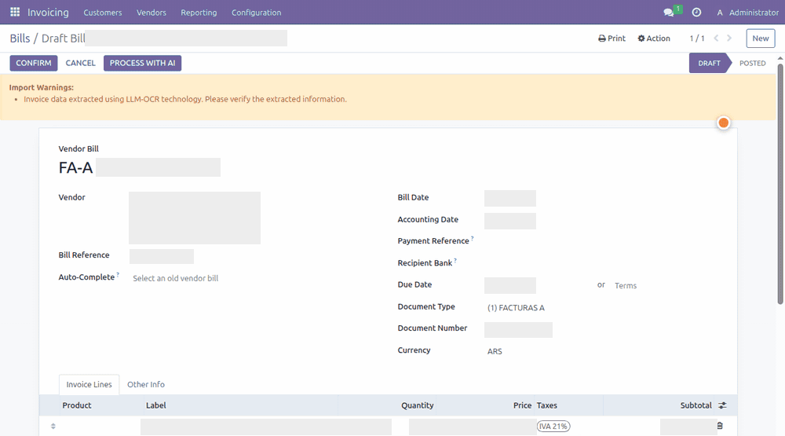

Import a PDF or image as a draft vendor bill in Odoo 16 Community. Review the result before posting.

Draft bill in Odoo. Invoice and vendor details are redacted.
Argentine vendor bills
Match the vendor by CUIT and extract day-first dates, the point of sale and the invoice number.
Map invoice letters A, B and C to LATAM document types and apply the company's configured VAT rules.
Extract printed VAT, IIBB and VAT perceptions, and document-level charges for review.
Results depend on scan quality, model accuracy and accounting configuration. Always verify the supplier, numbering, dates, taxes and totals. The app does not post bills or verify them with AFIP.
Requirements and setup
Use Odoo 16 Community with the Argentine chart of accounts and the OCA invoice import dependencies. This Python addon is not supported on Odoo Online.
Configure an explicit API Base and, if required, an API key under LLM → Configuration → Providers. Use LiteLLM or a compatible endpoint whose selected model supports PDF/image inputs via /responses and text extraction via /chat/completions.
Fetch the models and assign one to Invoice Extraction. An administrator then opts in on the company’s Invoice AI tab.
Upload a PDF, PNG or JPEG (up to 20 MiB) from Vendor Bills, or select Process with AI on an existing draft with an attachment.
External processing is off by default. After opt-in, the configured endpoint receives the entire invoice file, transcription, extraction prompts, company name, CUIT, currency and configured purchase VAT rates. LiteLLM may forward these to downstream providers. There is no built-in destination or Serfe service. Review the selected provider’s privacy, retention and pricing terms. This addon is free; the external service may charge for use.
Turn off the company option to stop future AI invoice requests and return uploads to standard Odoo decoders. The shared assistant can also be archived to disable AI invoice processing across companies.
Published by Serfe. Built on Apexive’s LLM modules and OCA Invoice Import.